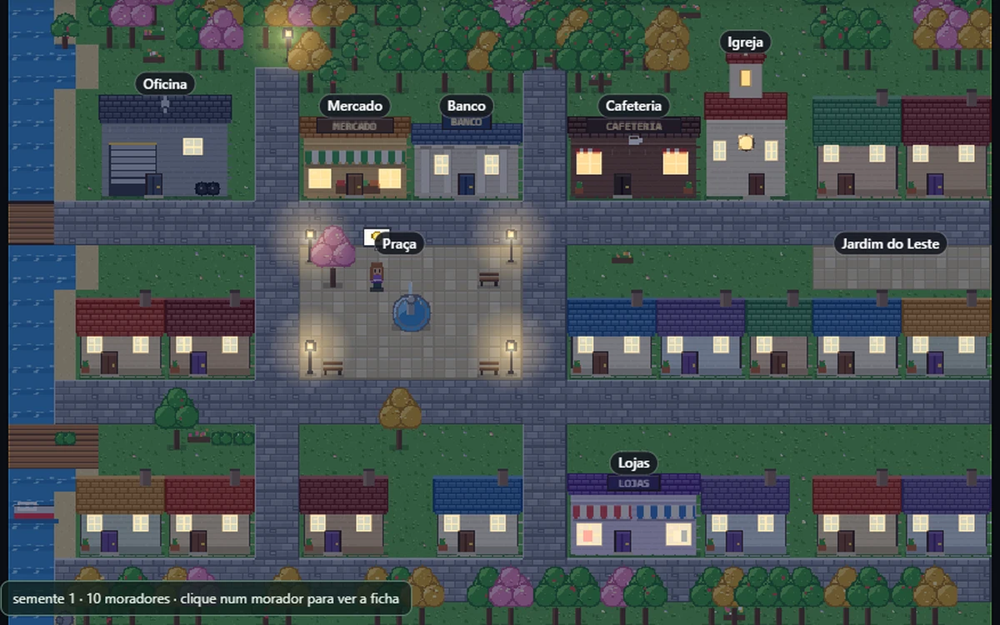

Estudo de caso
Cidade Viva
Uma cidade pequena em pixel, feita para ver comportamento aparecer. Cada morador decide com personalidade, memória e relação, e o autor não escreve o dia seguinte.

O problema
Queria uma simulação em que as pessoas da cidade tivessem história, e não só um sorteio de ações. A decisão precisava caber na vida daquele morador e, ainda assim, poder surpreender.
O que ficou de pé
O mapa tem 44 por 28 tiles, com praça no centro e jardim no bairro leste. A cidade abre com dez moradores e aceita de um a dezesseis. Há economia, memória, crenças, relações e um registro do que aconteceu.
O painel Histórias da cidade separa conversa, decisão e consequência da rotina de deslocamento. Em Criar situação, a pessoa escreve uma ideia e revisa a proposta antes de aplicar. Encontro, discussão, dinheiro e feira têm caminho próprio. Um pedido fora disso é recusado, em vez de aparecer como se tivesse acontecido.
As metas são opcionais. A cidade não precisa de uma condição de vitória para continuar.
Como está feito
- TypeScript, Vite e interface em Canvas 2D
- Motor de regras sempre disponível
- Backend local opcional, em Hono, para decisões sociais
- A chave do modelo fica na máquina e não entra no navegador
- Se a chave falta, o limite estoura ou a chamada falha, a simulação segue nas regras
O que continua com a pessoa
Dá para escolher a fonte das decisões e o limite de chamadas. A proposta de uma situação nova só entra depois da revisão. O histórico de uso e o salvamento ficam locais.
Esta página conta a peça. A simulação roda na máquina local e não está publicada aqui.